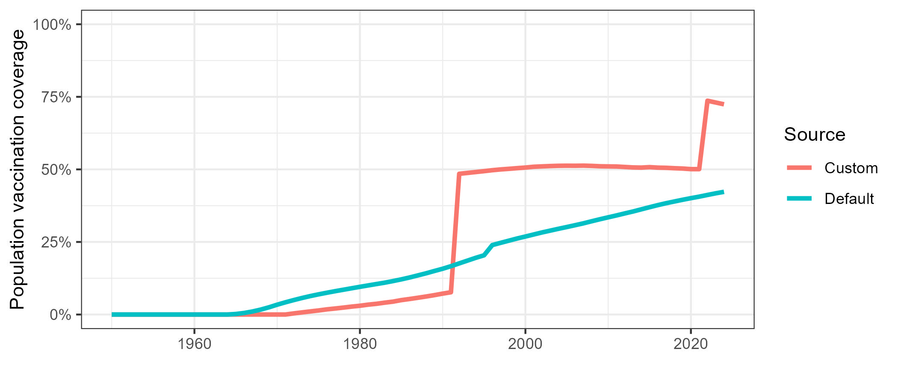

Vaccination
vaccination.RmdIntroduction
Vaccination is a key driver of population immunity and outbreak risk in infectious disease models like PREVAIL. While PREVAIL includes comprehensive default vaccination data, users can easily supply their own to reflect local coverage, campaign schedules, or vaccine characteristics. Custom vaccination inputs allow you to explore the impact of different strategies, disruptions, or interventions on immunity and epidemic outcomes.
This vignette shows how to provide your own routine and supplemental vaccination data, set custom schedules, and specify vaccine effectiveness. By the end, you’ll be able to tailor vaccination assumptions to match your data and scenario, ensuring model results reflect your setting as accurately as possible.
1. Prepare your custom data
Firstly we need to load our required packages, we’re using the pacman package here, which will also install these packages if missing.
#If pacman is not already present, install
if(!require("pacman")) install.packages("pacman")
#Install missing packages, and load
pacman::p_load(
PREVAIL,
tidyverse
)Once this is done, we can start thinking about the data we would like to customise. Here we are going to be focusing on vaccination and vaccine associated parameters. These are:
custom_routine_vaccination - Routine immunization activities.
custom_sia_vaccination - Supplemental immunization activities, these are activities such as outbreak response and top-up vaccination campaigns.
custom_vaccination_schedule - How and when vaccination is applied, this will determine the ages that routine immunization occurs at.
custom_vaccine_parameters - The effectiveness and duration of protection provided by immunization.
Custom routine and supplemental vaccination activities
To specify custom routine vaccination activities, we need to create a data.frame with four columns.
year - The years to apply routine vaccination to. age - The ages that routine vaccination should be applied to. dose - The vaccine dose. This is whether this is the 1st, 2nd, 3rd, etc., vaccine given. coverage - The population level coverage achieved in the year.
Here we will generate some custom routine vaccination data, with a linear increase in coverage, with some random noise.
# Routine vaccination
routine_vaccination <- data.frame(
year = 1970:2030,
age = 5,
dose = 1
) %>%
mutate(
# Linear increase with bounded random noise
coverage = round(pmax(pmin(0.2 + 0.75 * (year - min(year)) / diff(range(year)) +
rnorm(length(year), 0, 0.03), 1), 0), 2)
)
head(routine_vaccination)
#> year age dose coverage
#> 1 1970 5 1 0.16
#> 2 1971 5 1 0.22
#> 3 1972 5 1 0.15
#> 4 1973 5 1 0.24
#> 5 1974 5 1 0.27
#> 6 1975 5 1 0.30For supplemental vaccination, we need the same columns, but will simulate three campaigns at different years targeting a wider population.
# Routine vaccination
sia_vaccination <- expand.grid(
year = c(1990, 2020),
age = 15:50,
dose = 1
) %>%
group_by(year, age) %>%
mutate(
#Generate random noise
coverage = round(rnorm(1, rnorm(1, 0.8, 0.1), sd = 0.1), 2),
#Make sure coverage is bound between 0-1
coverage = pmin(pmax(coverage, 0), 1)
)
head(sia_vaccination)
#> # A tibble: 6 × 4
#> # Groups: year, age [6]
#> year age dose coverage
#> <dbl> <int> <dbl> <dbl>
#> 1 1990 15 1 0.84
#> 2 2020 15 1 0.57
#> 3 1990 16 1 0.66
#> 4 2020 16 1 0.76
#> 5 1990 17 1 0.81
#> 6 2020 17 1 0.86Custom vaccination schedule
Customizing your vaccination schedule allows for changes to how
routine vaccination is applied. However, this information will only be
included if you have not provided an input to
custom_routine_vaccination =. This is because
custom_routine_vaccination = requires a data.frame() which
specifies the ages targeted already.
Here we just need three inputs.
year - The year from which the schedule applies. Different vaccinations may have changes to the schedule, if you have vaccination activities specified which occur before the first date you provide, it will take the earliest date provided.
dose - The vaccine dose the schedule applies to.
age - The age to target. Ages should be prefixed by an “M” for month, or a “Y” for year. I.e. “M6” would apply vaccination to 6 month olds, and “Y5” would apply to 5 year olds.
Custom vaccination parameters
And finally, custom vaccination parameters. These change how much protection is provided, and how long it lasts for. Here we need four columns.
parameter - Either waning or protection.
duration - Either short or long. This refers to the initial protection provided by the vaccine, and the long term protection afforded after the initial protection wanes.
dose - The vaccine dose the parameter applies to.
value - For parameters that are waning, this is in years, and for protection, this is a proportion.
If parameters are not provided, then it will use the defaults. For
default values, see PREVAIL::vaccine_parameters.
2. Processing our custom vaccination parameters
Here we use custom_data_process_wrapper() instead of
data_load_process_wrapper(). However, the approach is
generally the same, as it takes all of the arguments used in
data_load_process_wrapper(), and a few others, all of which
have a default value of NA (which tells the model to use
the inbuilt data).
- custom_migration
- custom_fertility
- custom_mortality
- custom_population
- custom_contact_matricies
- custom_routine_vaccination
- custom_sia_vaccination
- custom_disease_data
- custom_vaccination_schedule
- custom_disease_parameters
- custom_vaccine_parameters
Here we will be focusing on the vaccination inputs:
- custom_routine_vaccination
- custom_sia_vaccination
- custom_vaccination_schedule
- custom_vaccine_parameters
Running the function
To run the model with custom data, you add in your custom data.frame
at the appropriate point. So to run the model with our custom_mortality
data.frame, we would fill in our initial arguments as usual, and then
specify custom_mortality = custom_mortality_df.
custom_params <- custom_data_process_wrapper(
iso = "PSE",
disease = "measles",
R0 = 15,
custom_routine_vaccination = routine_vaccination,
custom_sia_vaccination = sia_vaccination,
custom_vaccination_schedule = vaccination_schedule,
custom_vaccine_parameters = vaccination_parameters
)and for comparison, we will also run
custom_data_process_wrapper() without any changes to
vaccination.
default_params <- custom_data_process_wrapper(
iso = "PSE",
disease = "measles",
R0 = 15
)3. Running the model with our custom parameters and evaluating.
Now we have generated our parameters, we want to see the impact of
our custom vaccination. We do this as in the Getting started
vignette, by using run_model_unpack_results().
model_run_custom <- run_model_unpack_results(
params = custom_params,
simulation_length = (custom_params$input_data$year_end - custom_params$input_data$year_start) * 365,
no_runs = 1
)
model_run_default <- run_model_unpack_results(
params = default_params,
simulation_length = (default_params$input_data$year_end - default_params$input_data$year_start) * 365,
no_runs = 1
)And then we will use summary_plots() to compare
outputs.
custom_plots <- summary_plots(
model_run = model_run_custom,
params = custom_params
)
default_plots <- summary_plots(
model_run = model_run_default,
params = default_params
)To compare the impact of vaccination, we are going to combine the
$vaccination_coverage_plot object from both. To do this, we
will use our function combine_ggplot(), which will combine
two ggplot2 objects into the same plot.
combine_ggplot(
plot1 = custom_plots$vaccination_coverage_plot,
plot2 = default_plots$vaccination_coverage_plot,
plot_names = c("Custom", "Default")
)
As you can see, we have made large changes to the population level vaccination coverage! However, because we have changed several things at once, you might want to change them one-by-one and compare to see each individual changes impact.